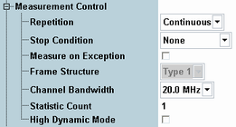

The "Measurement Control" parameters configure the scope of the LTE SRS measurement.
While the combined signal path scenario is active, some of the measurement control parameters display values determined by the controlling signaling application. For these parameters, a hint is given in the parameter description. See also "Scenario = Combined Signal Path".

Defines how often the measurement is repeated if it is not stopped explicitly or by a failed limit check.
- Continuous: The measurement is continued until it is explicitly terminated. The results are periodically updated.
- Single-Shot: The measurement is stopped after one statistics cycle.
Single-shot is preferable if only a single measurement result is required under fixed conditions, which is typical for remote-controlled measurements. Continuous mode is suitable for monitoring the evolution of the measurement results in time and observe how they depend on the measurement configuration, which is typically done in manual control. The reset/preset values therefore differ from each other.
- "None": The measurement is performed according to its "Repetition" mode and "Statistic Count", irrespective of the limit check results.
- "On Limit Failure": The measurement is stopped when one of the limits is exceeded, irrespective of the repetition mode set. If no limit failure occurs, it is performed according to its "Repetition" mode and "Statistic Count". Use this setting for measurements that are intended for checking limits, e.g. production tests.
Specifies whether measurement results that the R&S CMW identifies as faulty or inaccurate are rejected. A faulty result occurs, for example, when an overload is detected. In remote control, the cause of the error is indicated by the "reliability indicator".
- Off: Faulty results are rejected. The measurement is continued. The statistical counters are not reset. Use this mode to ensure that a single faulty result does not affect the entire measurement.
- On: Results are never rejected. Use this mode for development purposes, if you want to analyze the reason for occasional wrong transmissions.
Displays the frame structure of the uplink signal as defined in 3GPP TS 36.211. The value is set implicitly via the "eMTC" ("Type 1" = FDD, "Type 2" = TDD).
Remote command:Channel bandwidth in the range 1.4 MHz to 20 MHz. Set the bandwidth in accordance with the measured LTE signal.
The parameter is a common measurement setting, i.e. it has the same value in all measurements (e.g. SRS measurement and multi-evaluation measurement).
In the standalone (SA) scenario, this parameter is controlled by the measurement. In the combined signal path (CSP) scenario, it is controlled by the signaling application.
Defines the number of measurement intervals per measurement cycle (statistics cycle, single-shot measurement). This value is also relevant for continuous measurements, because the averaging procedures depend on the statistic count.
For SRS measurements, the measurement interval is completed when the R&S CMW has measured a full trace, including one or two SRS symbols and the preceding and following OFF time.
Remote command:Enables or disables the high dynamic mode.
The high dynamic mode is suitable for power dynamics measurements involving high ON powers. In that case, the dynamic range of the R&S CMW is eventually not sufficient to measure both the high ON powers and the low OFF powers accurately.
In high dynamic mode, the dynamic range is increased by measuring the results in two shots. One shot uses the configured settings to measure the ON power. The other shot uses a lower "Expected Nominal Power" value to measure the OFF power results.
Disable the high dynamic mode to optimize the measurement speed. Disable it especially if you measure low ON powers using a low "Expected Nominal Power" setting, so that the normal dynamic range is sufficient.
While the combined signal path scenario is active, this parameter is not configurable.
Remote command: